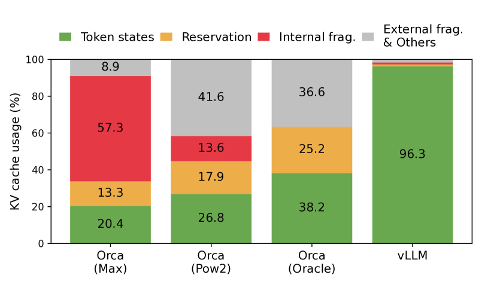

AI Infra 视角：推理引擎 = 调度器 + 内存系统 + 计算后端 + 分布式策略 + Serving 工程
面向应用的人只需要会用 vLLM 启服务；做 AI Infra 必须能讲清楚引擎内部的请求调度、KV 内存管理、CUDA Kernel 选择、并行切分和容错。下面把推理引擎拆成 5 个子系统，每个子系统直接给出原理、关键数据结构、源码定位和实战要点。
掌握深度分层
| 层级 | 定位 | 典型岗位 | 必须能回答 |
|---|
| L1 会用 | 启服务、调参、压测 | 算法工程师 | 怎么起 vLLM、怎么调 max-num-seqs |
| L2 会调优 | 读懂指标，定位瓶颈 | 应用侧 Infra | TTFT 高怎么排查、batch 满了为什么吞吐反降 |
| L3 懂原理 | 解释 PagedAttention、continuous batching、chunked prefill | AI Infra 初级 | KV 块为什么分页，prefill 和 decode 怎么共存 |
| L4 会改源码 | 读 vLLM/SGLang 调度器，写自定义 sampler、kernel | AI Infra 中高级 | vLLM Scheduler 的 waiting/running/swapped 状态机 |
| L5 能设计 | 从零设计推理系统、做 PD 分离、做多机调度 | 资深 / 专家 | 千卡 serving 集群怎么做请求路由、KV 迁移、容灾 |
AI Infra 岗一般要求 L3-L4，资深岗要求 L4-L5。
子系统一：调度器（Scheduler）
调度器决定每个 forward step 跑哪些请求。vLLM 的 Scheduler 是 Python 实现，核心数据结构是三个队列 + 一组 SequenceGroup 状态机。
状态机：每个请求是一个 SequenceGroup，状态在 WAITING → RUNNING → SWAPPED → FINISHED 之间迁移。WAITING 在 waiting 队列里排队等显存；RUNNING 进入 running 队列每个 step 参与 forward；显存不够时被抢占，KV 丢弃则回到 WAITING（recompute），KV 拷到 CPU 则进入 swapped 队列（swap）。
调度循环：每个 step 调用 schedule()，先尝试唤醒 swapped，再调度 running 的 decode，再用剩余 token budget 调度 waiting 的 prefill；预算由 max_num_batched_tokens 限制，并发由 max_num_seqs 限制。
抢占：当 running + 新 prefill 总 KV 块超过可用块时，按 FCFS 反向抢占最近加入的请求；抢占策略 recompute（默认，丢 KV 重算）或 swap（拷到 CPU pinned memory）。
源码：vllm/core/scheduler.py 的 _schedule_default()、_schedule_chunked_prefill()、_preempt()；SGLang 在 python/sglang/srt/managers/scheduler.py，使用 RadixAttention 前缀树而非简单队列。
子系统二：KV Cache 内存管理（PagedAttention 详解）
KV Cache 是显存第一稀缺资源。PagedAttention 把 KV 像 OS 虚拟内存一样按 block 管理，把碎片率从 60-80% 压到 < 4%。

来源：PagedAttention 论文（SOSP'23）Figure 2：现有系统 KV Cache 利用率仅 20-38%
核心数据结构：
BlockManager：维护物理 block 池（gpu_blocks、cpu_blocks），用 free list 管理空闲块，引用计数管理共享。BlockTable：每个 SequenceGroup 一张表，逻辑块号 → 物理块号。生成新 token 时，logical_block_id = pos // block_size，满了就 allocate 一块新物理块挂到表尾。block_size：默认 16。太小 block table 大、kernel 访存碎；太大内部碎片回到老问题、prefix 共享粒度变粗。
Copy-on-Write：parallel sampling / beam search 共享前缀块，引用计数 > 1；任一分支要写入时，先 copy 一份再写，引用计数减一。这就是 vLLM 比 HuggingFace generate 在 beam=4 时省 4 倍显存的原因。
Prefix Cache：对相同前缀（系统提示词、few-shot）的物理块加哈希签名，跨请求复用，命中后 prefill 阶段直接跳过这些块的计算。开关：enable_prefix_caching=True；命中率指标：vllm:gpu_prefix_cache_hit_rate。
FP8 KV：显存减半，可翻倍 batch 或上下文长度。需要 SM89+（Ada/Hopper），attention kernel 需支持 FP8 反量化；长上下文（>32k）和数学/代码任务要做精度回归。
子系统三：计算后端与 Kernel
同一算法不同 kernel 实现吞吐能差 2-5 倍。AI Infra 必须能看懂下面这些 kernel 的优化点。
FlashAttention v2：把 attention 拆成外层 query block、内层 K/V block，按 K/V 维度做 online softmax，所有中间 S=QK^T、P=softmax(S) 不落 HBM，全部留在 SRAM；并行维度从 batch×head 加到 batch×head×seq_q，长序列也能打满 SM。
FlashAttention v3：针对 H100。① warp specialization（生产者 warp 跑 TMA load，消费者 warp 跑 GEMM/softmax）；② async copy（TMA + cp.async）让 load 和 compute overlap；③ FP8 路径用 incoherent processing 抵消量化误差；典型 H100 SXM 上接近 75% MFU。
PagedAttention kernel：不同于 FlashAttention 的 contiguous KV，它每个 query token 要按 block table 间接寻址 KV 块；用 __ldg 做 read-only cache，每个 thread block 处理一个 query token 的多个 head，KV 按 block 顺序加载。
FlashInfer：把 PagedAttention + FlashAttention 合并实现，支持 ragged batch、多种 KV layout（NHD/HND）、动态 block size，vLLM v0.6+ 默认 backend 之一。
CUDA Graphs：decode step 形状固定（batch_size 一定时 input shape 不变），把整个 step 的 kernel launch 序列录成 graph，replay 一次替代上百次 launch；Llama-3-8B BF16 在 A100 上能减 10-15% 延迟。前提是 input shape 不能变，所以 vLLM 给常用 batch_size 各 capture 一份。
算子融合：fused RMSNorm + QKV proj、fused SiLU + gate proj、fused MoE（top-k + dispatch + grouped GEMM）；TensorRT-LLM 通过 plugin 把 attention + rotary + KV append 融成一个 kernel。
子系统四：并行与分布式策略
大模型推理必然涉及多卡多机，下面是 4 种并行的具体含义和通信开销。
Tensor Parallel（TP）：按列切权重矩阵。Attention：QKV 投影按 head 切，attention 内部不通信，output 投影按行切，每层 attention 末尾一次 all-reduce。FFN：第一层按列切，第二层按行切，FFN 末尾一次 all-reduce。每层 2 次 all-reduce，单 token 通信量 ≈ 2 × hidden_dim × dtype_size。Llama-70B TP=8 在 A100 NVLink 上 all-reduce 占 forward 时间 15-25%；跨机走 IB 会到 50%+，所以 TP 不跨机。
Pipeline Parallel（PP）：按层切到不同 GPU，micro-batch 流水。推理 decode 阶段每次只生成 1 个 token，micro-batch 数受限，bubble 严重，所以推理很少单独用 PP，通常和 TP 混合或仅用于跨机。
Expert Parallel（EP）：MoE 模型把专家分到不同 GPU。每层 2 次 all-to-all：dispatch（按路由结果把 token 发给对应 expert 卡）、combine（算完再聚回原卡）。瓶颈是 all-to-all 跨机带宽和路由不均；DeepSeek 用 DeepEP 在 H800 NVLink 上做了大量优化，redundant experts 解决热点。
Data Parallel（DP）：多副本，配请求路由层；推理服务的横向扩展默认就是 DP。Attention DP + FFN/MoE EP 是当前 MoE 大模型部署的常见组合（SGLang/DeepSeek-V3）。
Sequence Parallel：长上下文场景把序列维度切到不同卡，配合 Ring Attention 或 Striped Attention 做 KV 通信，主要解决单卡放不下超长 prompt 的 KV。
子系统五：Serving 工程化
这部分决定能不能扛生产流量。
01
HTTP/gRPC 入口
接收请求、鉴权、限流和协议适配
02
Tokenizer
独立进程或 worker 处理文本，避免阻塞 GPU 调度
03
调度器队列
排队、batching、KV Cache 预算和优先级决策
04
Forward
GPU worker 执行 prefill/decode 前向计算
05
Detokenizer
逐 token 反解码，准备流式输出
06
SSE/WebSocket 推流
按协议持续返回增量结果
OpenAI 兼容协议：路径 /v1/chat/completions、/v1/completions、/v1/embeddings；流式用 SSE，data: {...}\n\n，结束 data: [DONE]。tool calling、structured output（JSON schema、正则约束）走 Outlines/XGrammar。
核心指标（Prometheus）：
vllm:time_to_first_token_seconds：TTFT 直方图，p50/p95/p99 都要看。vllm:time_per_output_token_seconds：TPOT。vllm:e2e_request_latency_seconds：端到端。vllm:request_queue_time_seconds：队列时长，TTFT 涨先看这个。vllm:num_preemptions_total：抢占次数，常见瓶颈信号。vllm:gpu_cache_usage_perc、vllm:gpu_prefix_cache_hit_rate：KV 占用与命中。vllm:num_requests_running/waiting/swapped：三队列长度。
容错与隔离：OOM 自救（recompute/swap）、单卡 NCCL timeout 检测踢出、慢节点用 p99 兜底、超长请求隔离独立队列防尾延迟、请求级超时和取消（client 断开后调度器要立刻 abort 释放 KV）。
滚动升级：weight 持久化到本地 NVMe，新副本起来读完再切流量；KV 一般不持久化（除非 PD 分离场景做 KV migration）。
关键技术点 1：Continuous Batching
调度粒度从 request 级降到 iteration（token）级。Static batching 整批进出，最长那条没结束全 batch 都得等；continuous batching（Orca OSDI'22 提出）每个 forward step 都重组 batch：完成的请求立即返回 finish 槽位，等待中的请求立即加入。
关键实现点：① 不同请求 KV 长度不同，必须配 PagedAttention 这种支持 ragged batch 的内存管理才能真正落地；② 每个 step 重新构建 attention mask 和位置索引；③ token budget 控制单 step 最多处理 N 个 token，避免 prefill 把 step 拉爆。
瓶颈：当 batch 已打满 token budget 或 KV 块用满，新请求触发 preemption；max_num_batched_tokens 太小吞吐上不去，太大 TPOT 抖动。Llama-3-8B BF16 在 H100 上典型设 8192-16384。
关键技术点 2：Chunked Prefill
Prefill 是 compute-bound，单条 8k prompt 一次 forward 把 GPU 占满几百毫秒，期间 decode 的 TPOT 直接卡死，造成尾延迟。Sarathi-Serve 提出把 prefill 拆 chunk。
算法：每个 step 给一个 token budget（如 2048），先用 decode 请求填（每个 decode 1 token），剩余预算用来跑 prefill chunk；长 prompt 分多个 step 完成 prefill。
收益：① decode 的 TPOT 抖动从几百毫秒降到几十毫秒；② GPU 利用率提升（prefill chunk 把 decode 的 memory-bound 间隙填上，变成 compute + memory 混合）；代价是单条 prefill 总耗时略涨（多次 kernel launch 和 attention mask 重建）。
开关：vLLM --enable-chunked-prefill，v0.6 起默认开启；chunk 大小由 max_num_batched_tokens 控制。
关键技术点 3：PD 分离（Disaggregated Prefill-Decode）
Chunked Prefill 治标不治本：prefill 和 decode 仍共享同一组 GPU，扩缩容耦合。DistServe（OSDI'24）和 Splitwise（ISCA'24）提出物理拆分。
架构：① Prefill 集群：高算力卡（H100/H200），追求 TTFT，TP 较大、batch 较小。② Decode 集群：可以用算力略低但显存大的卡，追求吞吐和 TPOT，batch 大、KV 多。③ KV 传输：prefill 完后通过 NVLink/RDMA 把整段 KV 传给 decode 节点；H100 NVLink 900GB/s、CX-7 IB 400Gb/s，10k token Llama-70B 的 KV ~1.4GB，传输 < 5ms。
关键工程问题：① 路由层要根据 prompt 长度和当前两端负载决定走哪个 prefill 节点；② KV layout 跨节点要兼容，常用 NVSHMEM 或自研 RDMA 库；③ decode 节点要能接收 streaming KV，第一块到了就能开始 decode 第一个 token，进一步压低 TTFT。
vLLM/SGLang 实现：vLLM v0.6+ 实验性支持 disaggregated serving；DeepSeek/月之暗面/Mooncake 都是 PD 分离生产实践。
关键技术点 4：投机解码（Speculative Decoding）
Decode 是 memory-bound，瓶颈在权重从 HBM 读到 SM。一次 forward 验证多个 token 几乎不增加权重读取，是无损加速的关键洞察。
原理：用便宜的 draft 模型生成 K 个候选 token，大模型对 K+1 个位置并行做一次 forward，得到大模型在每个位置的真实分布；按拒绝采样接受最长前缀，第一个被拒绝的位置用大模型分布重采样。数学上等价于直接从大模型采样，无损。
变体：
- Draft model：用一个小模型（如 Llama-1B 配 Llama-70B），简单但 draft 也要算 forward。
- Medusa：在大模型 last hidden 上接 N 个独立 head 直接预测后 N 个 token，免 draft 模型，但精度依赖 head 训练质量。
- EAGLE / EAGLE-2：把大模型的 hidden state 也喂给 draft，接受率显著高于普通 draft；当前最常用。
- Lookahead Decoding：用 Jacobi 迭代生成 N-gram pool，命中即接受，无需训练。
陷阱：① 接受率低（< 0.5）反而变慢；② batch 越大越没收益（GPU 已 compute-bound）；③ 实现复杂，KV 要支持回滚被拒绝位置。
关键技术点 5：MoE 推理与 EP
DeepSeek-V3、Qwen2.5-MoE、Mixtral 8x22B 推动 MoE serving 成为 2025-2026 核心战场。
瓶颈：
- 路由不均：top-k 路由让部分专家成为热点，整 batch 跟着最慢专家走。训练侧用 aux loss 平衡，推理侧用 redundant experts（热门专家放 2 份）。
- all-to-all：每层 2 次 all-to-all（dispatch + combine），跨机 IB 是瓶颈；DeepEP 用 NVLink 做机内、IB 做机间，一次只发非零 token，比 NCCL all-to-all 快 3 倍。
- 显存：专家多激活少，纯 TP 把每个专家都切让 GEMM 太小；EP 每个专家完整放在一卡，配 grouped GEMM 一次算多个专家。
典型部署：DeepSeek-V3 671B 用 Attention DP=32 + Expert Parallel=32（一台 8 卡 H800 跑 8 个专家），prefill 节点和 decode 节点各跑独立 EP 集群。
计算与通信 overlap：每层 attention 算完先发 dispatch all-to-all，同时算下一组的 attention；DeepSeek DualPipe 在训练用，推理也有类似思路。
关键技术点 6：Prefix Cache 与 RadixAttention
多轮对话、Agent、few-shot prompt 有大量共享前缀。Prefix Cache 把相同前缀的 KV 块跨请求复用。
vLLM Prefix Cache：对每个完整 block 做 hash（block_size token 内容 + 前一块 hash），相同 hash 的物理块共享；命中时跳过这些 token 的 prefill 计算。开关 enable_prefix_caching。
SGLang RadixAttention：把所有活跃 KV 块组织成 radix tree（基数树），路径即 token 序列。新请求来时按 token 在树上匹配最长前缀，命中部分直接复用，未命中部分新建子节点。LRU 淘汰叶子；命中粒度比 vLLM 的 block hash 更细，多轮对话场景命中率显著更高。
命中率优化：路由层按 prompt prefix hash 把请求路由到同一实例，命中率从 30% 拉到 80%+；系统提示词命中后 TTFT 几乎为 0。
关键技术点 7：KV 量化（FP8 / INT8）
BF16 KV → FP8 KV 显存减半，可翻倍 batch 或上下文。
方案：
- per-tensor scale：整个 K 或 V 用一个 scale，简单但动态范围大时精度差。
- per-token scale：每个 token 一个 scale，精度更好，主流方案。
- per-channel scale：对 outlier channel 单独 scale，组合 SmoothQuant 思路。
硬件：FP8 需要 SM89+（Ada L40 / Hopper H100/H800/H200）；A100 没有 FP8 但可以走 INT8。
精度回归：① 短上下文一般无损；② > 32k 累计误差需要单独评测；③ 数学/代码任务比对话敏感；④ 用业务真实评测集（不是 MMLU）卡 acc/EM/pass@1。
四大引擎深度对比
| 维度 | vLLM | TensorRT-LLM | SGLang | TGI |
|---|
| 核心创新 | PagedAttention + continuous batching | NVIDIA 全栈 kernel + plugin | RadixAttention + 前端 DSL | 工程化 + HF 生态 |
| 调度器 | Python，可读性强，社区活跃 | C++ in-flight batcher，半闭源 | Python，前缀树调度 | Rust router + Python server |
| KV 管理 | Paged，block_size 可调，prefix cache（hash） | Paged，FP8 KV，循环 buffer | Radix tree 自动共享 | Paged（早期版本较弱） |
| 量化 | AWQ/GPTQ/FP8/INT8 | SmoothQuant/FP8/INT4 AWQ 全栈 | AWQ/FP8 | BitsAndBytes/GPTQ |
| 投机解码 | 支持（draft / EAGLE / Medusa） | 支持，性能强 | 支持 EAGLE | 较弱 |
| MoE | 支持，EP 持续完善 | 支持，性能优 | DeepSeek 优化最好 | 有限 |
| 多模态 | 较好 | 需要自己接 | 较好 | 有限 |
| 构建复杂度 | 低，pip 装 | 高，需要 build engine、绑版本 | 低 | 低 |
| 定位 | 通用 OSS 默认选项 | NVIDIA 上的极致性能 | 复杂 prompt / agent / 结构化生成 | HF 生态快速上线 |
Q1: 解释 PagedAttention，为什么提升吞吐？block_size 怎么选？
核心：把 KV Cache 像 OS 虚拟内存一样按 block 管理。
解决什么问题
传统按 max_seq_len 给每个序列预留连续显存，浪费严重（内部碎片 + 预分配碎片），实际利用率常 < 40%，并发上不去。
怎么做
逻辑上按 block_size（如 16）分块，物理上不连续，通过 block table 映射。新 token 满一块再申请下一块。共享前缀用引用计数 + CoW。
block_size 选型
太小（1-4）：block table 大、attention kernel 访存不友好、调度开销升高。太大（>64）：内部碎片回到老问题，prefix 共享粒度变粗。vLLM 默认 16，是 kernel 性能与碎片率的折中。
PagedAttention 把显存利用率从 ~40% 提到 >90%，吞吐提升来自更高的 batch size。
Q2: Continuous Batching 与 Static Batching 区别？
核心：调度粒度从 request 级降到 iteration（token）级。
Static
整批一起进入、一起出去。最长那条没结束全 batch 都得等，GPU 大量空转。
Continuous（Orca / vLLM）
每个 forward step 重新组 batch：完成的立即返回，等待的立即加入。配 PagedAttention，无需 padding 到同长。
瓶颈
batch 打满 token budget 后再加请求触发 preemption，max_num_batched_tokens 要按显存和 SLA 调。
continuous batching 让 GPU 永远在干活，吞吐通常 5-20 倍提升。
Q3: Prefill 和 Decode 一起跑会有什么问题？Chunked Prefill 和 PD 分离怎么解？
核心：两阶段计算特性完全不同，混跑互相伤害。
冲突
Prefill compute-bound，单条长 prompt 把 GPU 占满几百毫秒，期间 decode TPOT 卡顿。Decode memory-bound，单独跑 GPU 利用率低。
Chunked Prefill
把长 prompt 切 chunk，每个 step 拼一段 prefill + 多个 decode 进同一 batch，TPOT 抖动从几百 ms 降到几十 ms。
PD 分离
物理拆两个集群：Prefill 节点专跑首 token，Decode 节点专跑生成；KV 通过 NVLink/RDMA 传输。可独立扩缩容，TTFT 和 TPOT 解耦。
在线服务多用 chunked prefill；超大规模或 SLA 严苛用 PD 分离。
Q4: 投机解码原理？为什么能加速且不损精度？
核心：用便宜 draft 猜 K 个，大模型一次 forward 验证。
原理
Draft 生成 K 个候选 token，大模型对 K+1 个位置并行 forward，按拒绝采样接受最长前缀，第一个被拒位置用大模型分布重采样。数学上等价于直接采样，无损。
为何变快
Decode memory-bound，瓶颈是权重从 HBM 读到 SM。一次 forward 验证 K 个 token 几乎不增权重读取，TPOT 接近降为 1/K（接受率高时）。
变体
Draft model（Llama-1B + 70B）；Medusa（多头预测，免 draft）；EAGLE（在 hidden state 上 draft，接受率高）；Lookahead（Jacobi 迭代）。
提升 1.5-3x 不损精度，但接受率低反而变慢，且 batch 越大收益越小。
Q5: 设计 1k QPS、p99 TTFT < 500ms 的 70B serving 集群
核心：容量估算 + 分层架构 + SLO 拆分。
容量
70B BF16 ≈ 140GB，TP=4 在 4×A100-80G 或 2×H100-80G 跑得动。假设输入 1k、输出 256，单实例 ~30 QPS，需要 ~40 实例 + 余量。
分层
① 接入：LB + 鉴权 + 限流；② 路由：按 prefix hash 路由提高 cache 命中；③ 推理：vLLM 池，开 chunked prefill；④ 长 prompt 独立集群走 PD 分离；⑤ 监控 TTFT/TPOT/queue/preempt/cache hit。
达成 p99 TTFT
chunked prefill 控 chunk size，限单 step token 预算；超长请求隔离独立队列；预留 20% headroom；prefix cache 命中干掉系统提示词的 prefill。
容灾
多 AZ；权重持久化；KV swap 防 OOM；慢节点剔除；金丝雀升级。
设计题给分点：容量、SLO 拆分、瓶颈识别、可观测、容灾，缺一不可。
Q6: vLLM、TensorRT-LLM、SGLang 怎么选？
核心：workload + 硬件 + 团队能力三维决策。
vLLM
OSS 生态最活、上手最快、模型支持最全，适合大多数在线服务和团队，是默认选项。
TensorRT-LLM
纯 NVIDIA GPU、追求极致延迟和吞吐、能接受 build engine 的工程成本，适合大厂自营核心业务。
SGLang
有大量共享前缀、做结构化输出、tool calling、Agent 多轮，RadixAttention 命中红利明显；DeepSeek MoE 部署事实标准。
TGI
团队深度依赖 HF 生态、追求快速上线、性能要求不极致。
先问场景再选引擎，benchmark 永远要在自己 workload 上跑。
Q7: KV Cache 量化收益与风险？
核心：显存换精度。
收益
BF16→FP8 KV 显存减半，可翻倍 batch 或上下文长度；H100 attention kernel 原生支持 FP8。
风险
长上下文（>32k）累计误差放大；数学/代码任务敏感；动态范围大的层要 per-token / per-channel scale。
工程要点
校准集覆盖目标分布；和 weight 量化一起评估；上线前用业务评测集卡精度回归。
FP8 KV 是当前性价比最高的显存优化之一，但要做精度回归。
Q8: MoE 推理瓶颈？EP 怎么部署？
核心：路由不均 + all-to-all 通信。
瓶颈
① 路由不均，热门专家拖累整 batch；② all-to-all 跨机带宽是上限；③ 显存 — 专家多激活少，纯 TP 让 GEMM 太小。
部署
Attention 用 DP+TP，FFN/MoE 用 EP；DeepSeek-V3 671B 用 Attention DP=32 + EP=32。DeepEP 用 NVLink+IB 混合 all-to-all 比 NCCL 快 3x。
优化
专家亲和路由、训练时 aux loss 均衡、热点专家冗余副本、计算与通信 overlap。
MoE serving 是 2025-2026 AI Infra 核心战场，DeepSeek/Qwen/Mixtral 推动 EP 成熟。
Q9: TTFT 高怎么排查？
核心：从入口往后逐层切。
路径
① 网关时延（trace 接入层）；② 队列等待（queue depth、是否 waiting）；③ Prefill 时长（输入长度、是否 chunk、是否被抢占）；④ KV 是否重算（recompute）；⑤ Prefix cache 是否命中；⑥ GPU 是否在做别的请求。
指标
vllm:time_to_first_token_seconds、vllm:request_queue_time_seconds、vllm:num_preemptions_total、vllm:gpu_prefix_cache_hit_rate。
TTFT 排查 = 队列 + prefill + 抢占 + 缓存命中四件事。
Q10: vLLM preempt-by-recompute vs preempt-by-swap？
核心：显存不够时怎么腾位置。
Recompute
丢 KV，恢复时重跑 prefill。简单、不占 CPU 内存；长 prompt 重算贵。
Swap
KV 拷到 CPU pinned memory，恢复时拷回。长 prompt 友好；PCIe 带宽是瓶颈，CPU 内存要够。
选择
短 prompt 高吞吐用 recompute；长 prompt 低抢占率用 swap；vLLM 默认 recompute。
理解状态机就理解了 vLLM 调度器一半。
面试自查清单
① PagedAttention 块管理与 CoW；② Continuous batching 状态机；③ Chunked prefill 与 PD 分离的取舍；④ Prefix cache / RadixAttention 命中机制；⑤ 投机解码原理与变体；⑥ TP/PP/EP/SP 切分与通信开销；⑦ KV 量化的精度风险；⑧ MoE 路由与 all-to-all 优化；⑨ vLLM scheduler 状态机与 preemption 策略；⑩ FlashAttention v3 在 H100 上的关键优化（warp specialization、TMA、async）；⑪ CUDA Graphs 在 decode step 的收益；⑫ 服务化指标体系与 SLO 分解；⑬ 千卡集群的请求路由、KV 迁移、容灾。
LoRA 基础：低秩适配的原理
全参数微调需要更新模型的所有参数，代价高昂。LoRA（Low-Rank Adaptation）基于一个关键假设：模型微调前后的权重变化是低秩的——即 ΔW = W_finetuned - W_pretrained 可以用低秩矩阵乘积很好地近似。
具体做法：
- 冻结预训练模型权重 $W \in \mathbb{R}^{d \times d}$（或 $d_{in} \times d_{out}$）
- 添加两个可训练矩阵 $B \in \mathbb{R}^{d \times r}$，$A \in \mathbb{R}^{r \times d}$，其中秩 $r \ll d$（通常 r=8~64）
- 前向传播：$h = W x + BAx$（或写成 $h = Wx + \frac{\alpha}{r} BAx$，其中 α 是缩放因子）
- 训练时只更新 A 和 B，原始 W 保持冻结
Alpha 缩放：$\frac{\alpha}{r}$ 是一个常数缩放因子，通常固定 α=r（即初始缩放为 1），这样改变 r 时不需要重新调学习率。
应用位置：LoRA 最常用于 attention 层的 Q、K、V、O 投影矩阵，也有人应用于 MLP 层或所有线性层。通常只对 attention 层加 LoRA 就足够（~0.1% 参数量）。
为什么多 LoRA Serving 是刚需
在多租户（multi-tenant）LLM 服务场景下：
- 不同客户有不同任务：客服对话、代码补全、法律摘要、医疗问答、创意写作……每个任务都有自己微调的 LoRA 适配器
- 不可能为每个 LoRA 单独部署一份模型：70B 模型 FP16 要 140GB 显存，100 个 LoRA 就需要 14TB 显存，完全不现实
- 所有 LoRA 共享同一个 base model：它们只是在同一个基础模型上微调了不同的小适配器，99%+ 的权重是相同的
这就催生了多 LoRA serving 的核心设计问题：如何让一份 base model 同时服务于多个 LoRA 适配器的请求，最大化 GPU 利用率和吞吐？
核心思路：base model 权重共享驻留 GPU，LoRA 适配器按热度在 GPU/CPU/磁盘间分层存储，批处理时高效计算每个请求对应的 LoRA 增量。
LoRA Serving 架构演进
| 方案 | 做法 | 优点 | 缺点 |
|---|
| 1. Naive：每个 LoRA 独立部署 | 每个 LoRA 各加载一份完整模型 | 实现简单，隔离性好 | 显存爆炸（N×model_size），资源利用率极低，冷启动慢 |
| 2. 合并 LoRA（Merge） | 把 LoRA 权重合并进 base 模型 W' = W + BA/α | 无运行时开销，单模型最优性能 | 合并是永久性的（无法快速卸载）；每个活跃 LoRA 一份完整权重，仍然不支持多 LoRA 并发 |
| 3. 共享 base + Batched LoRA（Punica/S-LoRA） | GPU 常驻 base model，多个 LoRA 适配器同时加载，请求按 LoRA 分组批处理 | 显存大幅节省（base + N×adapter_size），支持多 LoRA 并发 | 需要专用 kernel 支持，批处理调度复杂 |
| 4. LoRA Fusion（LoRAX） | 运行时融合多个 LoRA，通过 learned routing 组合多个适配器效果 | 支持一次请求组合多个 LoRA 能力 | 需要额外训练 routing，研究阶段为主 |
现代生产系统（vLLM、TensorRT-LLM、S-LoRA、Punica）都采用方案 3：共享 base model + 多 LoRA 并发。
Punica：Batched GEMV (BGMV) Kernel
Punica 是第一个系统性解决多 LoRA serving 问题的工作，它的核心贡献是 BGMV（Batched Gather Matrix-Vector multiplication）kernel。
问题：一个 batch 里有多个请求，每个请求对应不同的 LoRA 适配器。普通 GEMM 假设 batch 中所有样本用相同权重，但多 LoRA 场景下每个样本的 B 和 A 矩阵不同。
计算分解：LoRA 的增量计算可以分解为两步：
$$y_{\text{LoRA}} = x \cdot B_i \cdot A_i$$
其中 $B_i$ 和 $A_i$ 是第 i 个请求对应的 LoRA 矩阵。这等价于：先计算 $x \cdot B_i$（每个请求独立的 GEMV），再乘以 $A_i$（再一次 GEMV）。</p>
BGMV 的核心思想：
- 把多个 LoRA 的 B 矩阵（和 A 矩阵）在显存中连续排列，形成一个"堆叠"的权重池
- 对于一个 batch 内的请求，每个 warp 负责一个请求的 LoRA 计算
- 用 gather 操作从堆叠的权重池中索引出当前请求对应的 B_i/A_i，而不是所有请求共享同一份权重
- 避免了"按 LoRA 分组 batch"的限制，不同 LoRA 的请求可以在同一个 CUDA kernel 中高效并行计算
// BGMV 核心直觉（伪代码）
__global__ void bgmv_kernel(
float* Y, const float* X,
const float* stacked_B, // 所有 LoRA 的 B 矩阵连续存储: [num_loras, d, r]
const int* lora_indices, // 每个请求对应的 LoRA ID
int batch_size, int d, int r)
{
int req = blockIdx.x; // 每个 block 处理一个请求
int lora_id = lora_indices[req];
const float* B_i = stacked_B + lora_id * d * r; // gather: 索引到当前请求的 B
// ... 执行 GEMV: y[req] = X[req] @ B_i @ A_i
}
BGMV 的意义：让"一个 batch 混合不同 LoRA 的请求"成为可能，不需要把相同 LoRA 的请求凑在一起才能批处理，大幅提升调度灵活性和 GPU 利用率。
S-LoRA：服务数千 LoRA 的系统设计
S-LoRA 在 Punica 基础上做了更系统的工程设计，目标是单机服务数千个 LoRA 适配器。核心设计有四点：
1. Heterogeneous Batching（异构批处理）
不同 LoRA 请求的 rank r 可能不同（有的 r=8，有的 r=64），有的请求可能同时挂载多个 LoRA。S-LoRA 不要求 batch 内 homogeneity，而是设计了能处理不同 rank、不同 LoRA 组合的通用 kernel。
2. Unified Paging for KV Cache
结合 PagedAttention 的思想，KV cache 的分页管理不区分 LoRA 归属——所有 LoRA 请求的 KV cache 共享同一个物理 block pool。这和单模型 serving 的 PagedAttention 一致，确保显存不会因为 LoRA 多样性而碎片化。
3. Optimized LoRA Kernel（Tucker 分解）
S-LoRA 观察到 LoRA 计算的主要瓶颈是 $X \cdot B$（因为 X 是 [batch, seq, d]，B 是 [d, r]）。它用 Tucker 分解把低秩矩阵乘进一步分解：
$$B \cdot A \approx U \cdot S \cdot V^T$$
并融合多个 kernel，减少访存次数。相比朴素 LoRA 计算，Tucker 分解在高 rank 时能额外减少 20%~40% 的计算。</p>
4. Hierarchical Adapter Management（分层适配器管理）
GPU 显存装不下数千个 LoRA 时：
- Hot adapters（热）：当前在处理请求的 LoRA，驻留 GPU 显存
- Warm adapters（温）：GPU 显存有余量时预取最近使用过的 LoRA，减少加载延迟
- Cold adapters（冷）：放在 CPU RAM，请求到来时通过 PCIe 异步传输到 GPU（prefetch）
- Frigid adapters（冻）：放在 SSD/磁盘，需要时才加载到 CPU 内存
配合预取（prefetching）策略：当请求队列中出现某个冷 LoRA 时，提前将其权重从 CPU 传输到 GPU，隐藏 PCIe 传输延迟。
多 LoRA 批处理的计算模型
在多 LoRA 场景下，一个 transformer 层的计算分为两部分：
- Base 计算（共享）：$Y_{\text{base}} = X \cdot W$，所有请求共享同一个 W，可以用标准 GEMM 高效计算，这部分占主要计算量
- LoRA 增量（不共享）：$Y_{\text{lora}}^{(i)} = X^{(i)} \cdot B_i \cdot A_i$，每个请求用自己的 $B_i, A_i$，需要用 BGMV 或类似的 batched kernel
- 输出：$Y^{(i)} = Y_{\text{base}}^{(i)} + \frac{\alpha}{r_i} Y_{\text{lora}}^{(i)}$
关键洞察：Base 计算量远大于 LoRA 增量计算量——即使有几十上百个 LoRA，LoRA 的额外开销（因为 r ≪ d）只有 base 的几个百分点。所以多 LoRA serving 的主要代价不是计算，而是LoRA 权重加载和调度。
# 多 LoRA 批处理的伪代码
def forward_batch(batch_requests):
# 1. 所有请求共享 base model 计算
X = gather_inputs(batch_requests) # [total_tokens, d_model]
Y_base = X @ W_base # 大 GEMM，共享权重，这是主要计算
# 2. 按 LoRA 分组，分别计算 LoRA 增量
Y_lora = zeros_like(Y_base)
for lora_id, indices in group_by_lora(batch_requests):
B, A, alpha_r = get_lora_weights(lora_id)
X_sub = X[indices]
Y_lora[indices] = X_sub @ B @ A * alpha_r # BGMV/BGM 处理不同 LoRA
# 3. 合并输出 + LayerNorm + Attention（base 和 LoRA 增量相加后继续标准计算）
Y = Y_base + Y_lora
return Y
实际工程问题
| 问题 | 说明 |
|---|
| Rank 选择 | r 越大表达能力越强但参数量越大；r=8~64 是常见范围，简单任务 r=8 就够，复杂任务 r=64。可以通过奇异值分析选 r。 |
| Alpha/r 比例 | 通常设 α=r，让初始化时 LoRA 增量的缩放为 1，避免改变原始输出分布；推理时 α/r 作为常数合并进 B/A 即可。 |
| 多 LoRA 混合 | 有些场景需要同时叠加多个 LoRA（如一个"代码风格"LoRA + 一个"中文"LoRA），可以做加权和：ΔW = Σ w_i · B_i A_i。vLLM 支持 LoRA 线性组合。 |
| Tokenizer 一致性 | 不同 LoRA 必须使用和 base model 相同的 tokenizer。如果某些 LoRA 添加了 special tokens，需要扩展 embedding 层并在加载 LoRA 时一并加载。 |
| Adapter 版本管理 | LoRA 权重依赖特定的 base model 版本（不同 checkpoint 或不同量化方式），版本不匹配会导致精度严重下降。 |
| LoRA 合并时机 | 离线合并（W' = W + BA/α）可以消除运行时开销，但失去多 LoRA 灵活性；在线不合并更灵活但需要 BGMV kernel。热 LoRA 可以临时合并进权重矩阵加速（warm merge），冷 LoRA 走 BGMV。 |
vLLM 多 LoRA 支持
vLLM 从 v0.3 开始支持多 LoRA 服务，关键配置和机制：
- 动态 LoRA 加载/卸载：通过
--enable-lora 开启，请求可以通过 API 指定 LoRA 适配器名称/路径
- 配置参数：
--max-lora-rank：支持的最大 LoRA rank（决定预分配的显存空间）--max-loras：GPU 上同时驻留的最大 LoRA 数量--max-cpu-loras：CPU 内存中缓存的最大 LoRA 数量--lora-dtype：LoRA 权重的数据类型（默认 auto，与 base model 一致）
- LoRA Manager：管理 LoRA 适配器的生命周期，维护 GPU 显存中的 LoRA 权重池，LRU 策略驱逐冷 LoRA，从 CPU 预取温 LoRA
- 批处理策略：相同 LoRA 的请求优先聚合成 batch，但也支持混合 LoRA batch（通过 BGMV 风格的 kernel）
# vLLM 启动多 LoRA 服务的示例命令
# python -m vllm.entrypoints.openai.api_server \
# --model meta-llama/Llama-2-7b-hf \
# --enable-lora \
# --max-lora-rank 64 \
# --max-loras 10 \
# --max-cpu-loras 50
# vLLM API 请求中指定 LoRA
import openai
client = openai.Client(base_url="http://localhost:8000/v1")
response = client.chat.completions.create(
model="meta-llama/Llama-2-7b-hf",
messages=[{"role": "user", "content": "写一段 Python 排序代码"}],
extra_body={"lora": "code-lora-v1"} # 指定 LoRA 适配器
)
TensorRT-LLM 也支持多 LoRA 服务，kernel 优化更激进，通常吞吐更高但灵活性略低。
常见误区
- 误区 1：LoRA 只是微调技巧——LoRA 不只是训练技术，它在推理服务中也扮演重要角色：低秩增量让"一个 base model 服务多个微调版本"在显存上可行。
- 误区 2：多 LoRA Serving 就是把多个 LoRA 加起来——不是简单的权重加法，核心挑战是系统级的高效批处理、显存管理和调度，BGMV kernel 和分层存储才是关键。
- 误区 3：r 越大越好——r 越大 LoRA 参数量越大、显存开销越大、BGMV 计算越慢；存在收益递减点，多数任务 r=8~16 已足够。
- 误区 4：用 LoRA 就必须把 BA 合并进 W——合并是推理优化选项之一，多 LoRA serving 场景下通常不合并，保留 W 不变才能共享 base model。
- 误区 5：LoRA 只能加在 Q/V 投影——早期工作只用 Q/V，后来发现加在 Q/K/V/O 和 MLP 上效果更好，但参数量也相应增加。生产中通常根据效果和开销权衡。
Q: LoRA 为什么用低秩矩阵？为什么微调的权重变化是低秩的？
LoRA 的核心假设是：预训练模型在适配下游任务时，权重变化 ΔW = W_finetuned - W_pretrained 本质上是"低秩"的——即模型适配新知识不需要在所有权重方向上都做大幅度调整，只需要在少数几个关键方向上更新。这个假设有几方面支撑：(1) 实证观察：对微调后的权重做 SVD 分解，发现大部分奇异值非常小，只有少数几个方向上有显著变化，top 几个奇异值就能解释大部分变化；(2) 内在维度理论：论文 "Intrinsic Dimensionality" 指出模型适配只需要一个低维子空间；(3) 过度参数化视角：大模型本身参数冗余度极高，下游任务可用远比模型维度低的自由度来适配。因此用两个小矩阵 BA（总参数量 2·d·r ≪ d²）就可以表达这些关键方向的更新，同时保持原始权重冻结，大幅减少训练显存和参数量。
Q: 多 LoRA Serving 怎么高效批处理？
核心是"共享 base，分离 LoRA"：(1) 所有请求共享一次 base model 的 forward pass，即大 GEMM Y_base = X @ W，这是计算的主力，和单 LoRA 或无 LoRA 一样高效；(2) LoRA 增量部分 Y_lora = X @ B_i @ A_i 对每个请求使用不同的 B_i 和 A_i，需要专门的 batched kernel 处理——Punica 提出的 BGMV（Batched Gather Matrix-Vector multiplication）把多个 LoRA 的权重在显存中连续堆叠，每个 block/warp 负责一个请求，通过 gather 索引找到对应权重，在一个 kernel 内高效完成不同 LoRA 的计算；(3) 同 LoRA 的请求可以聚在一起用标准 GEMM 计算（比 BGMV 更高效），不同 LoRA 的请求用 BGMV 混合处理；(4) S-LoRA 进一步用 Tucker 分解优化 LoRA 计算，用异构批处理支持不同 rank 的 LoRA，用统一分页管理 KV cache。最终效果是：一次前向传播中混合多个 LoRA 的请求，base 计算完全共享，LoRA 增量开销只有几个百分点。
Q: Punica 的 BGMV kernel 解决什么问题？
BGMV 解决的核心问题是：当一个 batch 里包含不同 LoRA 的请求时，如何高效计算每个请求各自的 LoRA 增量 X·B_i·A_i。在标准 GEMM/GEMV 中，batch 内所有样本共享同一个权重矩阵，GPU 通过 tiling 和共享内存重用权重来实现高吞吐。但多 LoRA 场景下每个请求的 B_i/A_i 不同，无法直接用标准 GEMM。朴素做法是把相同 LoRA 的请求凑在一起，凑不够 batch size 就浪费算力——这严重限制了调度灵活性和 GPU 利用率。BGMV 的做法：(1) 把所有 LoRA 的 B（和 A）矩阵在显存中连续排列成一个大的权重张量 stack；(2) 每个 CUDA block 处理一个请求，通过请求对应的 LoRA ID 做 gather 索引到自己的 B_i/A_i；(3) 这样不同 LoRA 的请求可以在同一个 kernel 中并行计算，不需要同 LoRA 凑 batch。代价是权重无法在请求间共享（每个请求用不同的 B_i），但因为 r 很小（LoRA 矩阵本身不大），且 base 计算（主要开销）已经共享，整体仍然高效。BGMV 本质是"gather + 多个小 GEMV"的融合 kernel。
Q: LoRA 和全参数微调的效果差多少？
在大多数下游任务上，经过调优的 LoRA（合适的 rank、目标模块、训练超参）效果可以接近或匹配全参数微调，差距通常在 1%~3% 以内。具体取决于：(1) 任务和 base model 的匹配度——如果下游任务和预训练数据分布差异大（如用通用 base model 微调医疗领域），LoRA 可能略逊于全参数微调；差异小则差距更小；(2) LoRA 的配置——rank 足够大（r=64 或更高）、应用到更多层（包括 MLP）时差距更小；(3) 数据量——数据量少时 LoRA 甚至可能比全参数微调更好（因为参数少，不容易过拟合）；大数据量上全参数微调有更多容量去适应。优势方面，LoRA 训练快 2~4 倍（只算梯度和更新小矩阵），显存占用大幅降低（不需要保存大多数参数的优化器状态），且天然适合多任务服务化（多个 LoRA 共享一个 base model）。生产中绝大多数定制化场景都用 LoRA 而非全参数微调。
Q: vLLM 怎么管理多个 LoRA 适配器的显存？
vLLM 通过 LoRA Manager 实现分层管理，核心机制：(1) 显存预留：启动时根据 --max-lora-rank 和 --max-loras 在 GPU 上预分配一块 LoRA 权重池（workspace），避免运行时动态分配导致碎片；(2) 热 LoRA 驻留 GPU：当前 batch 中正在使用的 LoRA 权重必须在 GPU 显存中，直接参与 BGMV 计算；(3) 冷 LoRA 在 CPU：不在使用的 LoRA 权重保存在 CPU RAM（--max-cpu-loras 控制数量），使用 LRU 策略驱逐；(4) 预取（Prefetching）：当等待队列中出现某个 CPU 上的 LoRA 请求时，在 GPU 处理当前 batch 的同时通过 PCIe 异步将该 LoRA 传输到 GPU workspace，隐藏传输延迟；(5) LRU 驱逐：GPU workspace 满了之后，驱逐最久未使用的 LoRA 权重释放空间；(6) KV cache 不区分 LoRA：所有 LoRA 请求的 KV cache 统一用 PagedAttention 管理，在同一个 block pool 中分配。这种分层管理让 vLLM 可以在有限 GPU 显存下同时服务数十到上百个不同的 LoRA 适配器。
SLO 指标体系：TTFT、TPOT 与延迟分位数
推理服务不是"吞吐越高越好"，而是要在 SLO 约束下最大化吞吐。面试官常考的 SLO 指标有明确的物理含义和优化方向。
延迟分位数为什么重要
在线推理服务只看平均延迟是自杀行为。P50 代表典型体验，P95/P99 代表长尾体验，而用户感知到的恰恰是最差体验。
- P50：一半请求比它快，一半比它慢——代表典型用户体验
- P95：5% 的请求超过这个延迟——排查一般性能问题
- P99：1% 的请求超过这个延迟——排查尾延迟、GC、抢占、慢节点
- P999：0.1% 的极端尾部——通常对应故障、超时、重试风暴
TTFT 和 TPOT 的分位数要分别监控：TTFT P99 高说明排队或 prefill 资源不足；TPOT P99 高说明 decode 阶段有抢占、chunked prefill 干扰、或 batch 过大。
SLO 分解公式
给定输入长度 S_in、输出长度 S_out、TP=4：
$$\text{E2E} = T_{\text{queue}} + T_{\text{prefill}}(S_{in}) + (S_{out} - 1) \times T_{\text{decode}}$$
- T_queue：排队等待调度，由并发度和 batch 饱和度决定
- T_prefill：≈ S_in / (prefill_tokens_per_second)，compute-bound，典型 1000-8000 tok/s/GPU
- T_decode：每个 token 一次 forward，memory-bound，典型 20-80 tok/s/GPU（batch 大时更高）
关键洞察：输出 512 token 时，TTFT 占比 < 20%，TPOT 是主导；输出 10 token 时，TTFT 占比 > 80%。短文本场景优化 TTFT，长文本场景优化 TPOT。
弹性扩缩容（Autoscaling）
推理服务的流量有明显的波峰波谷，弹性扩缩容是控制成本的关键。但和 Web 服务不同，LLM 推理不能简单基于 CPU/GPU-Util 扩缩容。
为什么不能用 GPU-Util 做 HPA
GPU-Util 反映的是时间维度的利用率，而非负载压力：
- Decode 阶段 GPU-Util 天然低：memory-bound 阶段 SM 利用率可能只有 30-50%，但服务已经接近满载
- GPU-Util 100% ≠ 服务饱和：可能是在做低效的小 batch decode，加机器反降 GPU-Util
- KV Cache 才是硬约束：显存中 KV block 耗尽时，新请求必须排队或抢占，此时 GPU-Util 可能只有 60%
扩缩容工程挑战
- 冷启动延迟：加载 70B 模型权重需要 30-120 秒（HBM 带宽 ~2TB/s，但权重 140GB），突发流量来不及
- 权重预热：实例启动后先跑几个 warmup 请求，让 CUDA kernel JIT 编译、CUDA Graph capture、权重预取完成
- 缩容优雅退出：不能直接 kill，要等 running 请求完成或设最长等待时间（如 60s）；新请求不再路由到该实例
- PD 分离场景：Prefill 和 Decode 独立扩缩容。Prefill 集群按 QPS × avg_input_len 扩；Decode 集群按并发数 × avg_output_len 扩
- 最小实例数：必须保留 baseline 实例数应对突发，不能缩到 0
CUDA Graph：生产部署视角
CUDA Graph 把一系列 kernel launch 录制成一张图，replay 时一次性提交，省去逐个 launch 的 CPU 开销和驱动层延迟。
为什么 Decode 阶段最受益
- Shape 固定：Decode 阶段 batch_size 不变时，input shape（1 token × batch × hidden_dim）每步都一样
- Kernel launch 开销占比高：Decode step 计算量小（单 token），kernel launch 延迟（每次 ~5-10μs，上百个 kernel 累计 0.5-1ms）占 TPOT 比例大
- Prefill 不适合：Prefill 的 input 长度多变（不同 prompt 长度差异大），shape 不固定，无法 capture 一张通用 graph
收益：Llama-3-8B BF16 在 A100 上 decode TPOT 降低 10-15%；小模型（7B 以下）收益更大（计算量小，launch 开销占比高）。
vLLM 中的 CUDA Graph 实践
- 多 graph capture：为不同 batch_size（1, 2, 4, 8, ..., max_num_seqs）各 capture 一张 graph；运行时按实际 batch 匹配最近的 graph，padding 到对应 batch 大小
- Padding 开销：实际 batch=6 时用 batch=8 的 graph，多算 2 个位置，但省去了 launch 开销，整体仍赚
- 内存开销：每张 graph 占用一定显存存中间状态，batch 档位越多越占显存；vLLM 默认 capture 约 8-10 个档位
- 开关：
--enforce-eager 关闭 CUDA Graph（调试用）；默认开启
- 与 Chunked Prefill 兼容：Prefill 不走 graph，decode 走 graph；混合 batch 时 decode 部分 padding 到最近档位
生产部署 Checklist
1. 模型加载
├── 权重格式（safetensors / GGUF / TensorRT engine）
├── 多卡 TP/PP 初始化（NCCL 通信域建立）
└── Warmup：跑 5-10 次 dummy forward，触发 JIT + Graph capture
2. 服务配置
├── max_num_seqs：最大并发序列数（按显存/KV 估算）
├── max_num_batched_tokens：单 step 最大 token 预算
├── --enable-chunked-prefill：开启分块 prefill
├── --enable-prefix-caching：开启前缀缓存
└── 量化配置（AWQ/GPTQ/FP8/FP8-KV）
3. 监控告警
├── TTFT P50/P95/P99
├── TPOT P50/P95/P99
├── KV Cache 使用率 & Prefix Cache 命中率
├── Running/Waiting/Swapped 队列长度
├── GPU-Util、显存、功耗、温度
└── Preemption 次数、OOM 次数
4. 扩缩容策略
├── KV 使用率 > 80% → 扩容
├── TTFT P99 > SLO → 扩容
├── KV 使用率 < 30% 且 waiting=0 → 缩容
└── 冷启动 60-120s，保留 baseline 实例
5. 容灾
├── 多 AZ 部署
├── 健康检查：/health 端点 + 实际推理 probe
├── 慢节点驱逐：TPOT P99 持续异常 → 摘除
└── 滚动升级：权重本地缓存 + 连接 drain
常见面试陷阱
- ❌ "GPU-Util 低说明服务没压力" → decode 阶段 GPU-Util 天生低，要看 KV 和队列
- ❌ "CUDA Graph 对所有阶段都有用" → 只对 shape 固定的 decode 有用，prefill 不适合
- ❌ "TTFT 高就是 prefill 慢" → 可能是排队等待，先看 queue_time 指标
- ❌ "弹性扩缩容可以缩到 0" → 模型加载几十秒，必须保留最小实例
- ❌ "平均延迟达标就行" → 在线服务 P99 才是用户感知的体验
Q1: 怎么估算一个 LLM 推理服务的显存需求？
显存 = 模型权重 + KV Cache + 激活/Workspace + CUDA Graph 开销

来源：PagedAttention 论文（SOSP'23）Figure 1：13B 模型在 A100-40GB 上权重占 65%、KV Cache 约 30%
模型权重
参数量 × bytes_per_param。BF16/FP16 是 2 bytes/param；INT8/W8A8 是 1 byte/param；W4A16/AWQ 是约 0.5 bytes/param + 少量元数据。例：70B BF16 ≈ 140GB，70B W4A16 ≈ 35GB + overhead。
KV Cache
2 × layers × kv_heads × head_dim × seq_len × bytes × batch。Llama-3-70B：80层, 8 KV heads(GQA), head_dim=128，BF16 KV = 2×80×8×128×2 bytes/token = 327,680 bytes/token ≈ 320KB/token。batch=64, seq=4096 → 320KB × 64 × 4096 ≈ 80GB。FP8 KV 减半到 ~40GB。
激活/Workspace
Prefill 阶段临时激活，约 1-5GB 取决于 batch 和 seq；Decode 阶段很小。FlashAttention 的 workspace 通常几百 MB。
CUDA Graph
每 capture 一个 batch 档位占用几十到几百 MB，8-10 个档位共 1-3GB。
快速估算：权重占大头（70B BF16 ≈ 140GB），KV Cache 按并发×上下文长度算。生产环境一般留 20% 余量。
Q2: A100 和 H100 在 LLM 推理中的实际性能差异有多大？为什么？
典型差距：H100 推理吞吐是 A100 的 2-3 倍，decode TPOT 降低 40-60%。
硬件差异
A100: 40/80GB HBM2e, 1.6/2.0 TB/s 带宽, 312 TFLOPS BF16, 无 FP8 支持。H100 SXM: 80GB HBM3, 3.35 TB/s 带宽, 989 TFLOPS BF16 (Tensor Core), 1979 TFLOPS FP8。
Prefill（compute-bound）
H100 BF16 Tensor Core 算力是 A100 的 ~3.2x，加上 TMA + warp specialization 等 Hopper 特性，prefill 吞吐约 2.5-3x A100。FP8 再提升 1.5-2x（需模型支持）。
Decode（memory-bound）
Decode 瓶颈在 HBM 带宽。H100 HBM3 带宽 3.35 TB/s vs A100 HBM2e 2.0 TB/s，理论上限 1.67x；加上 FlashAttention v3、FP8 KV 等优化，实际 decode 吞吐约 1.8-2.4x。
互联
H100 NVLink 900 GB/s vs A100 600 GB/s，多卡 TP 通信更快；H100 支持 NVLink Switch 全互联。
A100→H100 不是简单频率升级，是算力（3x）+带宽（1.7x）+FP8+TMA 的代际跨越，推理端到端约 2-3x 提升。
Q3: TP=4 和 PP=4 在同样的模型上，通信量差多少？
TP=4 每层通信量远大于 PP=4，但频率也更高；PP 的问题是 pipeline bubble。
TP=4 通信量
Tensor Parallel 在每层 attention 和 FFN 末尾各做一次 All-Reduce。单次 All-Reduce 通信量 ≈ 2 × (hidden_dim / TP) × (TP-1)/TP × dtype_size。简化：每层每个 token 通信量 ≈ 2 × hidden_dim × dtype_size（All-Reduce 的 ring 实现总传输量约 2×(P-1)/P × message_size ≈ 2 × message_size for P≥4）。Llama-70B hidden=8192, BF16: 每层每 token ≈ 2 × 8192 × 2 = 32KB。80 层 × 2（attn+ffn）= 每 token 全模型 ~5MB 通信。TP 走 NVLink，延迟低。
PP=4 通信量
Pipeline Parallel 在 stage 边界传输激活值。每 micro-batch 传输一次激活：batch × seq_len × hidden_dim × dtype_size。PP=4 切 4 段，只有 3 个边界点，每个 micro-batch 在边界处通信 2 次（前向+反向，但推理只需前向）。单次通信量 = batch × seq × hidden_dim × 2B，batch=1, seq=1(decode) 时只有 ~16KB，但 PP 的问题是气泡而非通信量：4 stage 流水线，第一个输出需要 4 个 step（等所有 stage 充满），之后每 step 出一个结果，但首次延迟高。
推理选型
推理 decode 阶段 batch=1 时 PP 的通信量小但 bubble 大（首 token 延迟高），TP 通信量大但延迟低（NVLink 900GB/s 传 32KB ≈ 0.04μs）。所以推理优先 TP，慎用 PP；只有模型大到单节点放不下（如 400B+）才跨机 TP+PP 混合。
推理优先 TP（低延迟、通信可被 NVLink 掩盖），PP 只用于模型跨节点时；TP 通信量大但频率高、单次小；PP 通信量小但有 pipeline bubble。
Q4: 推理服务 TTFT P99 突然升高怎么排查？
按数据流路径从外到内逐层排查：
1. 接入层
检查网关 LB 延迟、鉴权耗时、限流排队。看 Nginx/Envoy 的 upstream_response_time。
2. 队列等待
看 vllm:request_queue_time_seconds：如果 queue_time 涨了，说明服务端调度不过来。可能原因：max_num_seqs 打满、KV Cache 满了导致 waiting 队列堆积、某实例卡住。
3. Prefill 阶段
看 vllm:time_to_first_token_seconds 减去 queue_time。Prefill 慢可能是：chunked prefill 的 token budget 太小、有长 prompt 抢占了 prefill 资源、Prefix Cache 命中率下降。
4. 抢占/重算
看 vllm:num_preemptions_total：抢占激增说明 KV 不足，新请求触发 recompute/swap，TTFT 暴涨。
5. 慢节点/坏卡
检查是否有单个实例的 TTFT 远高于其他实例（负载不均或硬件故障）。DCGM 看 ECC 错误、NVLink 降速、温度异常。
6. GC/内存压力
Python GC 停顿、CPU 内存不足导致 swap、宿主机其他进程抢占 CPU。
排查顺序：接入层 → 队列等待 → Prefill → 抢占 → 慢节点 → 系统层。先看 queue_time 拆分 TTFT。
Q5: vLLM 和 TensorRT-LLM 在生产部署上的核心差异？
差异在于：vLLM 是"Python 生态优先"，TRT-LLM 是"性能优先但工程成本高"。
易用性
vLLM：pip install vllm + 一行命令启动，自动从 HF 下载模型，支持绝大多数开源模型。TRT-LLM：需要把模型 build 成 TensorRT engine（离线编译 30-60min），版本绑定严格（TRT 版本 × CUDA 版本 × 模型版本），新模型支持滞后 2-4 周。
性能
TRT-LLM 在 NVIDIA 自家 GPU 上通常比 vLLM 快 10-30%（极致 kernel fusion、in-flight batching、FP8 全栈优化），但差距在缩小（vLLM 0.6+ 引入 FlashInfer、FP8、CUDA Graph 默认开启后差距约 5-15%）。
灵活性
vLLM：Python 代码可直接 hack 调度器、加自定义 logits processor、做研究原型。TRT-LLM：核心是 C++ runtime + 预编译 engine，改 kernel 需要重新 build，灵活性差。
生态
vLLM：社区活跃、模型支持最快、与 LangChain/vLLM Production Stack/K8s 集成好。TRT-LLM：NVIDIA 官方支持、与 Triton Inference Server 深度集成、企业级 SLA。
快速上线/研究/多样模型选 vLLM；NVIDIA 全栈、极致性能、大厂核心业务选 TRT-LLM + Triton。